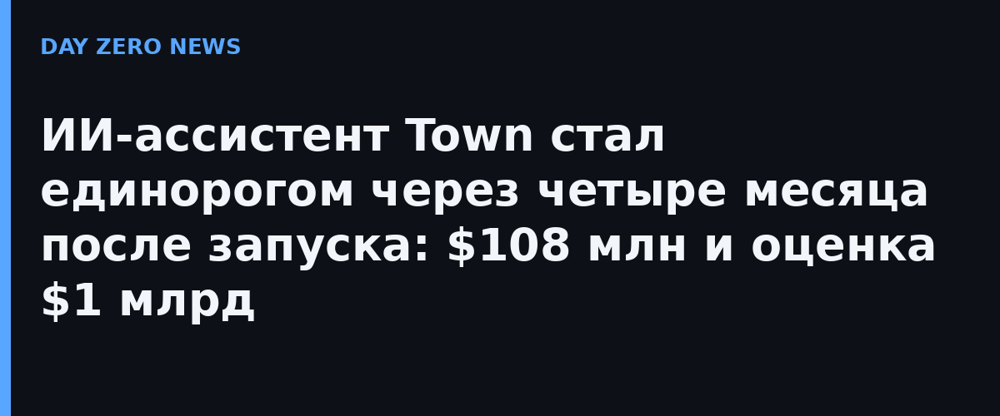

Продукт Town — персональный рабочий ассистент Townie: он подключается к почте, календарю, документам и рабочим системам сотрудника, выучивает его проекты, коллег и стиль переписки, а потом берёт рутину на себя. Новое поколение Townie умеет договариваться между собой: ассистенты задают вопросы друг другу и передают задачи по команде. Каждый делится только тем, чем поделился бы сам владелец, запрашивает разрешение там, где нужно, и возвращает человеку решения, которые требуют человеческого взгляда.
Раунд B на $108 млн прошёл всего через четыре месяца после запуска и спустя несколько месяцев после Series A на $55 млн, который в июне вела a16z. По данным компании, с июля число платящих клиентов выросло в четыре раза, а число платящих команд — в девять; тысячами компаний Townie уже пользуются каждый день. По объёму раунд попадает в первый процентиль среди американских раундов B в юридическом сегменте за последние 48 месяцев. «ИИ ускорил каждого из нас поодиночке. Теперь он может ускорить команды вместе», — сказал сооснователь и гендиректор Town Жан-Дени Грез.
Инвесторы ставят на агентов, которые исполняют работу, а не просто отвечают на вопросы, — и это прямой вопрос безопасности: Town передаёт ИИ-агентам доступ к рабочим почтовым ящикам и корпоративным системам. Компания отвечает обещанием, что контекст ассистентов принадлежит клиенту и его можно унести с собой при уходе, по умолчанию подключённые данные не идут в обучение моделей, а сервис сертифицирован по SOC 2 Type 2. Модели берутся у нескольких крупных лабораторий — чтобы не попадать в зависимость от одной.
Конкурент Town в потребительском сегменте, ассистент Instinct, в сентябре привлёк $1 млрд при оценке $10 млрд — категория личных ИИ-ассистентов разогревается стремительно. Оговорка честная: финансирование и рост клиентов ещё не доказательство, что агенты, перекладывающие задачи друг на друга, вывезут реальную ценность в масштабе. Но сам сдвиг показателен: рынок продаёт не чат, а исполнителей.
Отдельного официального анонса раунда на публичной странице компании найти не удалось — раздел announcements закрыт за логином; факты сверены по TechCrunch и венчурной базе Dealroom.